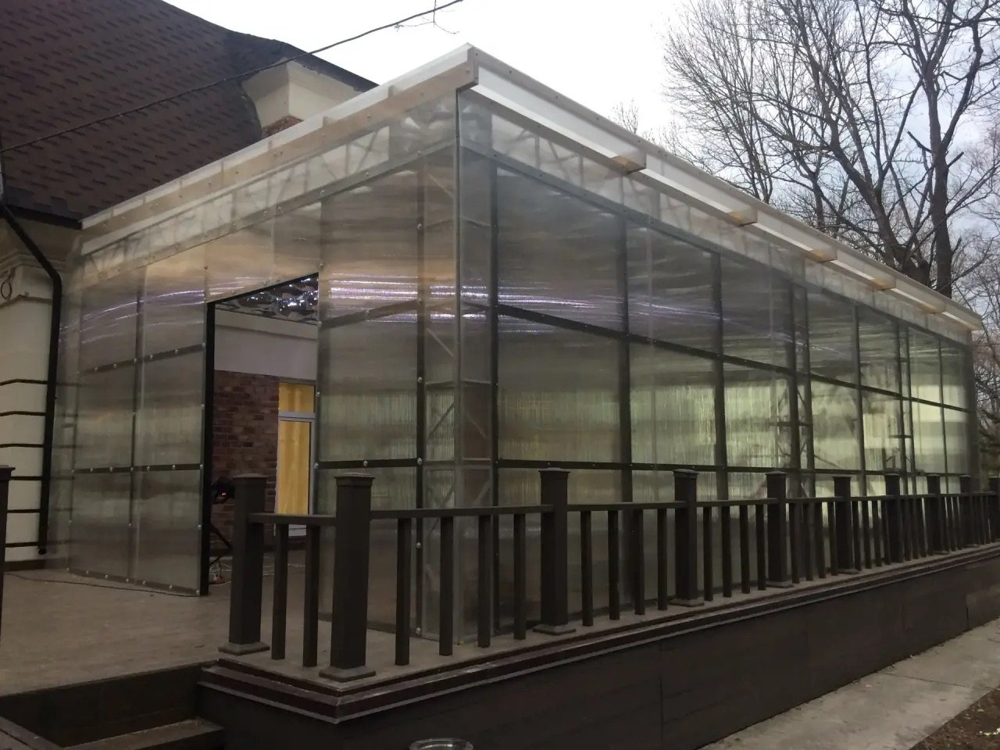

Замер
Уточняем объём и состояние объекта.
Внутренняя отделка · Владивосток
Выполняем отделку квартир и домов — от подготовки поверхностей до чистовых работ. Весь прайс собран ниже на этой странице.

Прайс на внутреннюю отделку
Итоговый расчёт зависит от площади, состояния объекта и согласованного состава работ.
258 позиций · 9 категорий
| Наименование работ | Ед. | Стоимость |
|---|---|---|
| Грунтовка стен и пола (1 слой) | м² | 100 ₽ |
| Грунтовка потолка (1 слой) | м² | 130 ₽ |
| Штукатурка стен | м² | 700 ₽ |
| Штукатурка потолка | м² | 800 ₽ |
| Декоративная штукатурка | м² | 2 900 ₽ |
| Цементно-песчаная штукатурка стен под сетке из стекловолокна с устройством маяков | м² | 1 800 ₽ |
| Ошкуривание штукатурки (выравнивание) | м² | 150 ₽ |
| Заливка пола (стяжка) | м² | 1 500 ₽ |
| Шпатлёвка под покраску стен | м² | 1 000 ₽ |
| Шпатлёвка под покраску потолка | м² | 1 200 ₽ |
| Покраска стен (2 слоя) | м² | 600 ₽ |
| Покраска потолка (2 слоя) | м² | 650 ₽ |
| Подготовка поверхности перед цементной штукатуркой | м² | 130 ₽ |
| Монтаж штукатурной сетки | м² | 180 ₽ |
| Монтаж ПВХ уголков в штукатурку | м.п. | 190 ₽ |
| Гипсовая штукатурка стен (включая грунтование) | м² | 900 ₽ |
| Гипсовая штукатурка стен на узких участках (менее 500 мм) | м.п. | 900 ₽ |
| Монтаж утепления ЭППС | м² | 300 ₽ |
| Наименование работ | Ед. | Стоимость |
|---|---|---|
| Обшивка ГКЛ (1 слой) | м² | 2 500 ₽ |
| Устройство дверных откосов из ГКЛ перед покраской | м.п. | 1 500 ₽ |
| Устройство оконных откосов из ГКЛ перед покраской | м.п. | 1 500 ₽ |
| Устройство коробов из ГКЛ перед покраской | м.п. | 2 300 ₽ |
| Устройство грильято | м² | 2 000 ₽ |
| Установка лючков 400×400 | шт. | 1 200 ₽ |
| Установка лючков 200×200 | шт. | 1 000 ₽ |
| Укладка керамогранита на пол 60×60 на МОПЫ | м² | 2 500 ₽ |
| Укладка керамогранита на стену (средний формат) | м² | 2 800 ₽ |
| Укладка керамогранита на стену (большой формат) | м² | 4 000 ₽ |
| Устройство откосов из керамогранита | м.п. | 1 500 ₽ |
| Подрезка керамогранита под 45° | м.п. | 700 ₽ |
| Монтаж сапожка | м.п. | 1 000 ₽ |
| Затирка плитки | м² | 200 ₽ |
| Возведение каркаса ГКЛ | м² | 1 000 ₽ |
| Монтаж звукоизоляции Knauf Акустик | м² | 250 ₽ |
| Обшивка листами ГКЛ каркаса в 1 слой | м² | 350 ₽ |
| Обшивка листами ГКЛ каркаса в 2 слоя | м² | 650 ₽ |
| Монтаж малярных уголков в гипсокартон (откосы и перегородки) | м.п. | 500 ₽ |
| Монтаж откосов | м.п. | 1 000 ₽ |
| Монтаж пластиковых подоконников | м.п. | 1 000 ₽ |
| Закладная в каркас ГКЛ под мебель/телевизор | шт. | 850 ₽ |
| Вывод кабеля из ГКЛ | шт. | 150 ₽ |
| Наименование работ | Ед. | Стоимость |
|---|---|---|
| Грубое шпаклевание по цементной штукатурке | м² | 500 ₽ |
| Грубое шпаклевание по цементной штукатурке на узких участках (<500 мм) | м.п. | 250 ₽ |
| Заделка стыков армирующей лентой | м.п. | 350 ₽ |
| Ошкуривание и грунтование стен | м² | 180 ₽ |
| Монтаж углоформирующей ленты с формированием угла | м.п. | 170 ₽ |
| Шпаклевание черновое | м² | 750 ₽ |
| Шпаклевание черновое на узких участках (<500 мм) | м.п. | 400 ₽ |
| Монтаж стеклохолста под покраску | м² | 350 ₽ |
| Монтаж стеклохолста на узких поверхностях (<500 мм) | м.п. | 170 ₽ |
| Шпаклевание чистовое | м² | 750 ₽ |
| Шпаклевание чистовое на узких участках (<500 мм) | м.п. | 400 ₽ |
| Нанесение грунта под окраску (включая дефектовку) | м² | 250 ₽ |
| Нанесение грунта под окраску на узких участках (<500 мм) | м.п. | 120 ₽ |
| Покраска | м² | 720 ₽ |
| Покраска узких участков (<500 мм) | м.п. | 300 ₽ |
| Покраска карниза (включая шпаклевание, грунтовку) | м² | 1 000 ₽ |
| Малярная отделка видимого торца плитки/керамогранита | м.п. | 350 ₽ |
| Грунтовка стен перед поклейкой обоев | м² | 85 ₽ |
| Нанесение декоративной штукатурки | м² | 1 500 ₽ |
| Поклейка обоев на бумажной основе | м² | 600 ₽ |
| Поклейка обоев на флизелиновой основе | м² | 420 ₽ |
| Поклейка панно | м² | 1 800 ₽ |
| Покраска плинтуса | м² | 350 ₽ |
| Формирование примыканий встраиваемых элементов | м.п. | 650 ₽ |
| Наименование работ | Ед. | Стоимость |
|---|---|---|
| Грунтование бетонного потолка | м² | 120 ₽ |
| Монтаж каркаса (Knauf П113, одноуровневый) | м² | 1 000 ₽ |
| Монтаж каркаса (одноуровневый) на узких поверхностях (<500 мм) | м.п. | 800 ₽ |
| Монтаж каркаса (Knauf П112, двухуровневый) | м² | 1 800 ₽ |
| Монтаж закладных в каркас под светильники | шт. | 500 ₽ |
| Монтаж закладных в каркас под подшторники | шт. | 250 ₽ |
| Установка трекового шинопровода в подсистему ГКЛ потолка | м.п. | 3 400 ₽ |
| Заполнение каркаса потолка минеральной ватой | м² | 350 ₽ |
| Обшивка листами ГКЛ каркаса в 1 слой | м² | 300 ₽ |
| Обшивка листами ГКЛ каркаса в 1 слой на узких поверхностях | м.п. | 180 ₽ |
| Обшивка листами ГКЛ каркаса в 2 слоя | м² | 900 ₽ |
| Обшивка листами ГКЛ каркаса в 2 слоя на узких поверхностях | м.п. | 360 ₽ |
| Заделка стыков армирующей лентой | м.п. | 350 ₽ |
| Шпаклевание черновое (включая грунтовку, шлифовку) | м² | 900 ₽ |
| Шпаклевание черновое на узких участках (<500 мм) | м.п. | 500 ₽ |
| Поклейка стеклохолста под покраску | м² | 400 ₽ |
| Поклейка стеклохолста на узких участках (<500 мм) | м.п. | 200 ₽ |
| Шпаклевание чистовое (включая грунтовку, шлифовку) | м² | 900 ₽ |
| Шпаклевание чистовое на узких участках (<500 мм) | м.п. | 500 ₽ |
| Грунтование потолка перед покраской | м² | 300 ₽ |
| Грунтование потолка перед покраской на узких участках | м.п. | 150 ₽ |
| Покраска потолка | м² | 700 ₽ |
| Покраска потолка на узких участках (<500 мм) | м.п. | 330 ₽ |
| Оклейка профиля лентой уплотнительной | м.п. | 50 ₽ |
| Наименование работ | Ед. | Стоимость |
|---|---|---|
| Черновые полы | ||
| Подготовка полов к укладке шумоизоляционных материалов (зачистка, обеспыливание, грунтование) | м² | 170 ₽ |
| Монтаж звукоизоляции Акуфлор | м² | 300 ₽ |
| Монтаж утепление ЭППС | м² | 350 ₽ |
| Монтаж звукоизоляции Акуфлекс | м² | 170 ₽ |
| Монтаж пароизоляции | м² | 50 ₽ |
| Укладка армирующей сетки | м² | 120 ₽ |
| Устройство бетонной стяжки | м² | 1 100 ₽ |
| Устройство полусухой стяжки (с материалом) | м² | 1 500 ₽ |
| Чистовые полы | ||
| Укладка тёплых полов до 2 м² | шт. | 3 500 ₽ |
| Укладка тёплых полов свыше 4 м² | м² | 900 ₽ |
| Устройство выравнивающей стяжки до 20 мм | м² | 1 000 ₽ |
| Грунтование пола перед укладкой ПВХ | м² | 90 ₽ |
| Укладка ПВХ плитки | м² | 900 ₽ |
| Подготовка поверхности перед укладкой паркетной / инженерной доски | м² | 1 000 ₽ |
| Укладка паркета / инженерной доски (прямая укладка) | м² | 1 500 ₽ |
| Устройство примыканий силиконом | м.п. | 350 ₽ |
| Монтаж плинтусов | м.п. | 700 ₽ |
| Наименование работ | Ед. | Стоимость |
|---|---|---|
| Подготовка поддона без бортика к укладке плиткой (разуклонка) | шт. | 4 250 ₽ |
| Подготовка поддона с бортиком разной формы (разуклонка) | шт. | 6 000 ₽ |
| Устройство полимерной гидроизоляции в 2 слоя | м² | 500 ₽ |
| Проклейка углов и примыканий гидроизоляционной лентой | м.п. | 170 ₽ |
| Рез плитки (чистый) | м.п. | 850 ₽ |
| Рез плитки (скрытый) | м.п. | 450 ₽ |
| Рез плитки под углом вручную или механически | м.п. | 1 000 ₽ |
| Изготовление отверстий в плитке диаметром до 50 мм | шт. | 600 ₽ |
| Изготовление отверстий в плитке диаметром 50–70 мм | шт. | 750 ₽ |
| Изготовление отверстий в плитке диаметром 70–110 мм | шт. | 900 ₽ |
| Подготовка отверстия для кнопки инсталляции | шт. | 1 200 ₽ |
| Устройство скрытого люка под плитку | шт. | 5 000 ₽ |
| Монтаж стыковочного элемента к плитке | м.п. | 850 ₽ |
| Монтаж встроенных световых профилей (с устройством штроб) | м.п. | 680 ₽ |
| Укладка декоративного кирпича | м² | 3 000 ₽ |
| Облицовка плиткой диагональю 300–650 мм | м² | 2 500 ₽ |
| Облицовка штучной мозайкой диагональю 10–70 мм | м² | 4 100 ₽ |
| Облицовка штучной плиткой диагональю 70–200 мм | м² | 3 400 ₽ |
| Облицовка плиткой диагональю 650–1300 мм | м² | 3 000 ₽ |
| Облицовка плиткой диагональю 1300–1650 мм | м² | 4 000 ₽ |
| Облицовка плиткой диагональю 1650–2650 мм | м² | 5 500 ₽ |
| Облицовка плитки «ёлочкой» | м² | 3 400 ₽ |
| Формирование угла затирками | м.п. | 1 500 ₽ |
| Затирка плитки/мозаики цементной затиркой | м² | 500 ₽ |
| Затирка плитки/мозаики двухкомпонентной эпоксидной затиркой | м² | 850 ₽ |
| Наименование работ | Ед. | Стоимость |
|---|---|---|
| Розетки, выключатели, светильники | ||
| Подготовка к монтажу розеток и выключателей (зачистка проводов) | шт. | 300 ₽ |
| Монтаж розеток/выключателей в подрозетник (провода зачищены) | шт. | 250 ₽ |
| Монтаж розеток/выключателей (накладной монтаж) | шт. | 350 ₽ |
| Розеток накладных 1 пост. | шт. | 750 ₽ |
| Розеток и выключателей на подготовленные места | шт. | 550 ₽ |
| Розеток сетевых 1 выход | шт. | 550 ₽ |
| Розеток сетевых 2 выхода | шт. | 750 ₽ |
| Розеток RJ45 + TV | шт. | 750 ₽ |
| Монтаж встроенного светильника с подключением | шт. | 250 ₽ |
| Монтаж накладного светильника с подключением | шт. | 500 ₽ |
| Монтаж настенного светильника/бра с подключением | шт. | 1 500 ₽ |
| Монтаж патронов с лампой | шт. | 120 ₽ |
| Монтаж светодиодной ленты с подключением | м.п. | 170 ₽ |
| LED лента одноцветная (от/до) | шт. | 400–550 ₽ |
| LED лента RGB/RGBW (от/до) | шт. | 550–800 ₽ |
| Профиля для LED ленты | шт. | от 650 ₽ |
| Блок питания 12/24В | шт. | 800 ₽ |
| Установка трансформаторов для диодных подсветок | шт. | 420 ₽ |
| Кабель и кабельные системы | ||
| Монтаж кабеля (до 5 жил, сеч. до 4 мм²): открытой на скобах | м.п. | 180 ₽ |
| Монтаж кабеля (до 5 жил, сеч. до 4 мм²): на скобах при высоте >4 м | м.п. | 210 ₽ |
| Монтаж кабеля (до 5 жил, сеч. 6–10 мм²): открытой на скобах | м.п. | 240 ₽ |
| Монтаж кабеля (SATA, UTP, FTP) открытым способом | м.п. | 140 ₽ |
| Монтаж кабеля (до 5 жил, сеч. до 4 мм²): в трубах/каналах | м.п. | 200 ₽ |
| Монтаж кабеля (до 5 жил, сеч. 6–10 мм²): в трубах/каналах | м.п. | 330 ₽ |
| Затяжка провода в трубы до 32 мм | м.п. | 80 ₽ |
| Затяжка провода в трубы до 100 мм | м.п. | 165 ₽ |
| Монтаж коробов из ПВХ до 40×40 | м.п. | 240 ₽ |
| Монтаж коробов из ПВХ до 100×60 | м.п. | 400 ₽ |
| Распределительные щиты и автоматы | ||
| Монтаж щита навесного до 72 мод. | шт. | 1 600 ₽ |
| Монтаж щита навесного до 144 мод. | шт. | 4 100 ₽ |
| Монтаж встраиваемого щита до 12 мод. в гипсокартоне | шт. | 2 500 ₽ |
| Монтаж встраиваемого щита до 12 мод. в пеноблоке | шт. | 3 300 ₽ |
| Монтаж встраиваемого щита до 12 мод. в кирпиче | шт. | 4 000 ₽ |
| Монтаж встраиваемого щита до 24 мод. в гипсокартоне | шт. | 3 000 ₽ |
| Монтаж встраиваемого щита до 36 мод. в гипсокартоне | шт. | 3 500 ₽ |
| Монтаж встраиваемого щита до 48 мод. в гипсокартоне | шт. | 4 000 ₽ |
| Монтаж встраиваемого щита до 60 мод. в гипсокартоне | шт. | 5 000 ₽ |
| Монтаж встраиваемого щита до 72 мод. в гипсокартоне | шт. | 6 500 ₽ |
| Установка автомата в РЩ 1п (с подготовкой и подключением) | шт. | 650 ₽ |
| Установка автомата в РЩ 2п | шт. | 800 ₽ |
| Установка автомата в РЩ 3п | шт. | 1 000 ₽ |
| УЗО (диф-автомат) двухполюсного с подключением | шт. | 800 ₽ |
| УЗО (диф-автомат) четырёхполюсного с подключением | шт. | 1 300 ₽ |
| Реле напряжения | шт. | 1 000 ₽ |
| Монтаж счётчика 1ф | шт. | 1 500 ₽ |
| Монтаж счётчика 3ф | шт. | 2 500 ₽ |
| Монтаж контура заземления | ед. | от 40 000 ₽ |
| Штробление и пробивка | ||
| Пробивка гнезда под розетку: бетон | шт. | 650 ₽ |
| Пробивка гнезда под розетку: кирпич | шт. | 500 ₽ |
| Пробивка гнезда под розетку: ГВЛ/ДСП | шт. | 400 ₽ |
| Установка подрозетника на «Ротбонд» | шт. | 120 ₽ |
| Резка/пробивка борозды под кабель по бетону (2–3 см) | м.п. | 400 ₽ |
| Резка/пробивка борозды под кабель по кирпичу (2–3 см) | м.п. | 300 ₽ |
| Слаботочные системы | ||
| Монтаж видеокамеры с настройкой | шт. | 6 800 ₽ |
| Монтаж IP камер видеонаблюдения внутренних | шт. | 3 500 ₽ |
| Монтаж IP камер видеонаблюдения внешних (высота до 3 м) | шт. | 4 000 ₽ |
| Монтаж IP камер видеонаблюдения внешних (высота до 5 м) | шт. | 5 500 ₽ |
| Монтаж и настройка видеорегистратора до 8 камер | шт. | 8 000 ₽ |
| Монтаж видеодомофона (режим подъезд–квартира) | шт. | 4 250 ₽ |
| Монтаж IP домофона с настройкой | шт. | 5 500 ₽ |
| Монтаж и настройка точки доступа Wi-Fi | шт. | 2 500 ₽ |
| Подключение и настройка роутера | шт. | 4 000 ₽ |
| Монтаж датчика движения с подключением | шт. | 500 ₽ |
| Монтаж электрического полотенцесушителя | шт. | 2 500 ₽ |
| Монтаж телевизора на кронштейн (до 48") | шт. | 2 500 ₽ |
| Монтаж телевизора на кронштейн (от 48") | шт. | 6 000 ₽ |
| Наименование работ | Ед. | Стоимость |
|---|---|---|
| Инженерная сантехника | ||
| Монтаж и сборка коллектора тёплого пола (до 10 контуров, со штраблением) | шт. | 8 500 ₽ |
| Монтаж и сборка коллектора тёплого пола (более 10 контуров) | шт. | 14 000 ₽ |
| Монтаж труб тёплого пола с укладкой ЭППС и демпферной ленты | м.п. | 1 200 ₽ |
| Монтаж выводов под дополнительный сантехприбор (вода и канализация) | шт. | 5 000 ₽ |
| Монтаж дополнительной инсталляции | шт. | 6 000 ₽ |
| Монтаж радиатора отопления (коллекторная разводка, с переделкой выводов) | шт. | 8 500 ₽ |
| Монтаж радиатора отопления (стояковая разводка) | шт. | 15 000 ₽ |
| Монтаж радиатора отопления после отделочных работ | шт. | 850 ₽ |
| Установка встроенного смесителя | шт. | 8 500 ₽ |
| Монтаж коллекторного отопления (коллекторный шкаф + разводка, без штрабления) | шт. | 35 000 ₽ |
| Монтаж душевого трапа | шт. | 2 500 ₽ |
| Шумоизоляция дополнительного стояка канализации (до 3 м) | шт. | 5 000 ₽ |
| Монтаж вентиляционных коробов пластиковых (до 7 м) | компл. | 5 500 ₽ |
| Монтаж вентиляционных коробов пластиковых (более 7 м, за доп. м) | шт. | 750 ₽ |
| Монтаж коллекторной разводки ХГВС до 7 приборов (1 ввод) | компл. | 162 000 ₽ |
| Монтаж коллекторной разводки ХГВС до 7 приборов (2 ввода) | компл. | 180 000 ₽ |
| Чистовая сантехника | ||
| Установка ванны со сливом-переливом | шт. | 5 000 ₽ |
| Установка унитаза / биде | шт. | 3 000 ₽ |
| Установка декоративной части слива-перелива ванны | шт. | 400 ₽ |
| Установка чистовой части встроенного смесителя на раковину | шт. | 2 000 ₽ |
| Установка чистовой части встроенного смесителя на душ/ванну | шт. | 2 500 ₽ |
| Подключение стиральной/сушильной/посудомоечной машин | шт. | 3 000 ₽ |
| Монтаж накопительного водонагревателя до 100 л с подключением | шт. | 5 000 ₽ |
| Подключение сервопривода тёплого пола | шт. | 900 ₽ |
| Подключение системы фильтрации питьевой воды | шт. | от 2 500 ₽ |
| Установка гигиенического душа | шт. | 1 300 ₽ |
| Установка раковины с тумбой | шт. | от 5 000 ₽ |
| Установка раковины подвесной | шт. | от 3 400 ₽ |
| Установка сифона для раковины | шт. | 1 200 ₽ |
| Установка смесителя на раковину | шт. | 1 700 ₽ |
| Монтаж и подключение полотенцесушителя | ед. | от 5 000 ₽ |
| Монтаж и подключение вытяжки отдельностоящей | ед. | от 5 500 ₽ |
| Монтаж и подключение зеркала с подсветкой | ед. | от 3 300 ₽ |
| Установка сухого сифона и решётки для волос в трап | шт. | 500 ₽ |
| Подключение системы защиты от протечек | шт. | 3 500 ₽ |
| Наименование работ | Ед. | Стоимость |
|---|---|---|
| Демонтажные работы | ||
| Демонтаж стены из блока | м³ | 4 000 ₽ |
| Демонтаж стен из блока толщ. 200 мм | м² | 1 300 ₽ |
| Демонтаж перегородок из блока толщ. 100 мм | м² | 900 ₽ |
| Демонтаж стены из кирпича | м³ | 4 000 ₽ |
| Демонтаж старых половых покрытий (бетонных) | м² | 600 ₽ |
| Демонтаж бетонной стены | м³ | 17 000 ₽ |
| Демонтаж старого отделочного слоя | м² | 600 ₽ |
| Демонтаж утепления | м² | 425 ₽ |
| Демонтаж радиаторов отопления | шт. | 700 ₽ |
| Демонтаж старых половых покрытий (деревянных) | м² | 500 ₽ |
| Общестроительные работы | ||
| Подготовка и защита полов к малярным работам (настил ДВП, уборка, грунтование) | м² | 250 ₽ |
| Увеличение высоты дверного проёма (в мягких материалах) | шт. | 850 ₽ |
| Заполнение штроб гипсовыми составами | м.п. | 150 ₽ |
| Разнорабочий | чел./час | 550 ₽ |
| Подготовка полов к строительным работам (зачистка, уборка) | м² | 170 ₽ |
| Устройство перегородок | ||
| Возведение перегородок толщиной 100 мм | м² | 1 800 ₽ |
| Возведение перегородок из кирпича | м² | 2 500 ₽ |
| Возведение перегородок из андезитобазальтовых блоков 190 мм | м² | 2 500 ₽ |
| Сборка каркаса из TECE профиля | м² | 2 200 ₽ |
| Возведение каркаса перегородок | м² | 1 000 ₽ |
| Монтаж бескаркасной звукоизоляции | м² | 850 ₽ |
| Монтаж звукоизоляции Knauf Акустик в перегородку | м² | 250 ₽ |
| Обшивка листами ГКЛ перегородки в 1 слой | м² | 350 ₽ |
| Обшивка листами ГКЛ перегородки в 2 слоя | м² | 650 ₽ |
| Бурение стен: толщ. 140–300 мм, диам. до 30 мм | ед. | от 500 ₽ |
| Сверление отверстий в перекрытиях до 200 мм диам. 52–68 мм | ед. | 2 500 ₽ |
Нужен расчёт по объекту? Прайс помогает оценить отдельные работы; итоговая смета зависит от объёма и условий на месте.
Обсудить отделкуРаботаем прозрачно
Согласуем смету и сроки, затем выполняем работы по этапам.
Уточняем объём и состояние объекта.
Формируем состав работ и расчёт.
Выполняем согласованные этапы.
Передаём результат и документы.